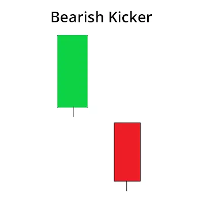

एक बियरिश किकर एक कैंडलस्टिक पैटर्न है जो दो कैंडल्स से मिलकर बनता है और यह एक आने वाली निचली तरफ की स्विंग की संकेत देने की मान्यता से युक्त होता है।
एक बियरिश किकर उपट्रेंड या डाउनट्रेंड में बना सकता है और इसमें एक बियरिश कैंडल होता है जो नीचे की तरफ एक गैप से शुरू होता है और एक बलिश कैंडल होता है।
| How to Identify a Bearish Kicker Candlestick Pattern |
एक बिशिष्ट बिकर कैंडलस्टिक पैटर्न की पहचान कैसे कर सकते हैं, इसके बारे में नीचे बताया गया है।
| How to trade using a Bearish Kicker Candlestick Pattern |
जब ट्रेडर किसी विशिष्ट स्टॉक चार्ट पर एक बियरिश किकर पैटर्न पहचानता है, तो वह बियरिश किकर पैटर्न के उभरते हुए अगले कैंडल में ट्रेड में शामिल हो सकता है। स्टॉप लॉस पिछले कैंडल के उच्चतम स्तर पर रखा जाना चाहिए।
| Bullish & Bearish Kicker criteria |